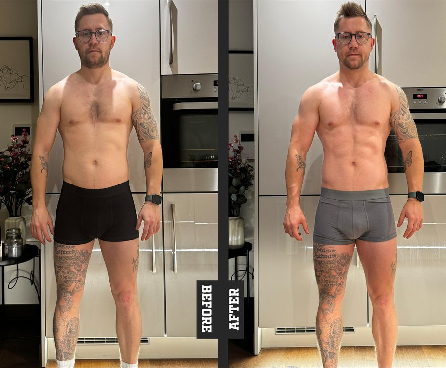
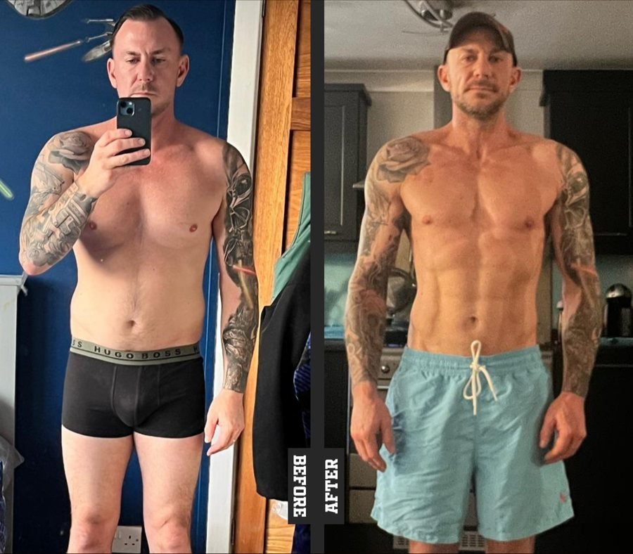
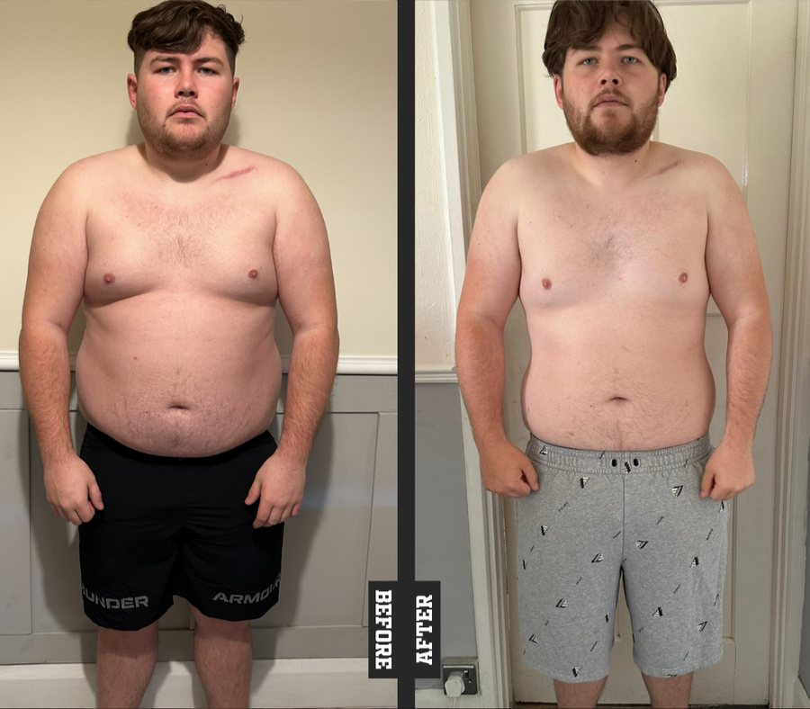
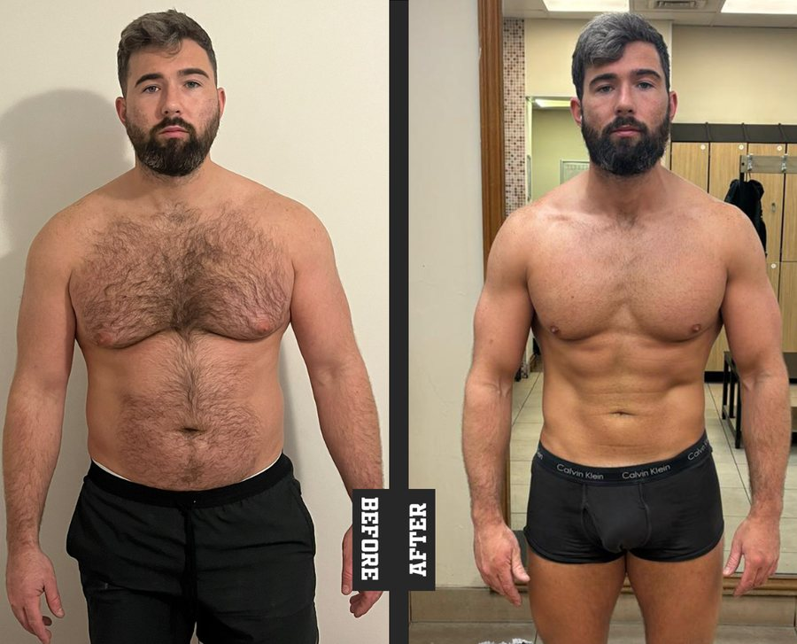
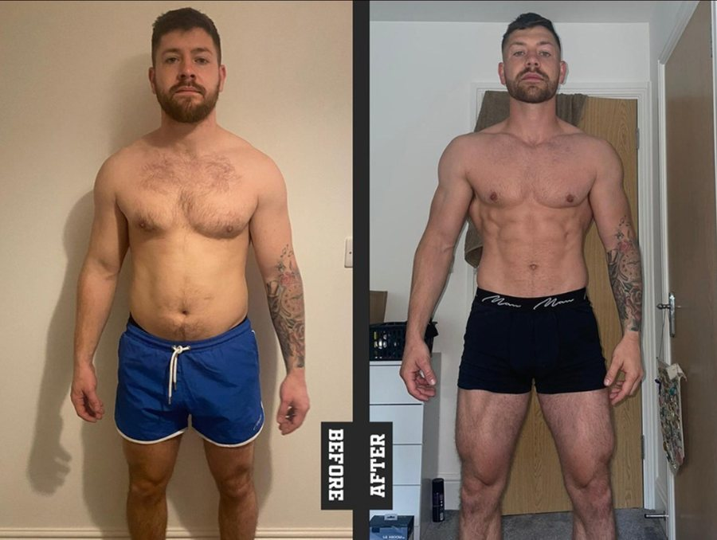
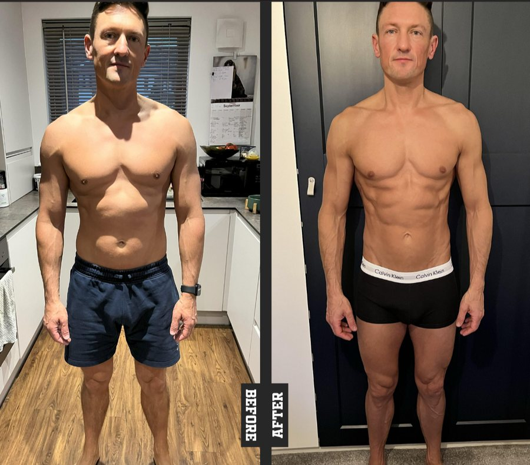

SIMPLE · ACCURATE · NO GUESSWORK
THE NUMBER ON YOUR SCALES ISN'T THE PROBLEM
RAW ↔ COOKED
MACRO CONVERTER
Weigh it raw, eat it cooked — the numbers don't match. That's why you're stuck, not your willpower. Chuck the weight in below. No bollocks, no guessing.
e.g. Chicken breast, Rice, Pasta, Potato, Salmon...
RESULT
Protein
Carbs
Fat
Cooking mainly changes water content. Exact cooked weights vary between batches, so conversions are estimates.
REAL DADS. REAL RESULTS.

CAINE
4 years sober. Ran a marathon. Then felt himself slipping again and didn't let it get any further.

CHRIS
50 years old, trained his whole life, decided average wasn't good enough anymore. Stepped on a bodybuilding stage.

RYLAN
Found out he was going to be a dad. Realised the version of him then wasn't the one he wanted his daughter to grow up with.

SAM
Dad of two, plumber, no time. Tried everything for years. Turning 30 was the line in the sand and he crossed it.

JACK
Had never seen his own abs. Not once. Wasn't walking into another holiday without them.

JAMES
Trained for years. A different plan every time. Nothing to show for it until he stopped guessing.
SORTED TODAY. WHAT ABOUT THE WEEKEND?
1-2-1 ONLINE
COACHING
This tool fixes today's plate. It doesn't fix Friday. Your mates say "just come out for one." Saturday you're asked again. Sunday you're calling the week a write-off. Same pattern, every week. That's not a numbers problem — that's not having a plan for the whole week, not just the easy days.
BOOK A COACHING CALLFree discovery call. No hard sell — just an honest chat about where you're at and what it'll take.
BETTER.
STRONGER.
LEANER.
NO
EXCUSES.